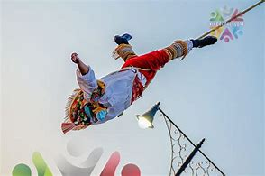

Introducción
Los Voladores de Papantla es una de las danzas más emblemáticas y fascinantes de la cultura mexicana. Originaria del estado de Veracruz, esta práctica ritual se ha transmitido a lo largo de los siglos y continúa siendo un símbolo cultural de las comunidades totonacas. Fue declarada Patrimonio Cultural Inmaterial de la Humanidad por la UNESCO en 2009.
